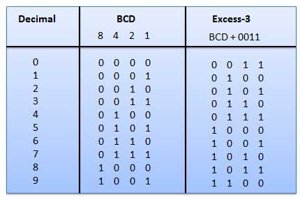

The binary system is one of the most important concepts in computing. It is the method computers use to represent and process all types of data. Unlike the decimal system, which uses ten digits (0–9), the binary system uses only two digits: 0 and 1. Despite its simplicity, binary is powerful enough to represent complex information such as text, images, videos, and software programs.

Figure: Binary representation of decimal numbers
Binary is a base-2 number system. This means it only uses two digits, 0 and 1, to represent values. Each digit in a binary number is called a bit, which stands for “binary digit.”
In a computer, bits represent electrical signals:
These two states make binary ideal for electronic systems because circuits can easily switch between on and off.
Binary numbers are made up of multiple bits grouped together. Each position in a binary number represents a power of 2. This allows computers to convert binary values into decimal numbers and other types of data.
| Decimal | Binary | Explanation |
|---|---|---|
| 1 | 0001 | 2⁰ = 1 |
| 2 | 0010 | 2¹ = 2 |
| 3 | 0011 | 2¹ + 2⁰ = 3 |
| 4 | 0100 | 2² = 4 |
By combining bits, computers can represent increasingly larger numbers and more complex data.
Binary is used because it is simple, efficient, and reliable. Electronic components such as transistors are designed to handle two states (on/off), making binary the most natural way for computers to process information.
Using binary reduces the chance of errors and allows computers to operate at high speeds. It also simplifies the design of hardware systems.
Binary is not only used for numbers. It is also used to represent letters, symbols, and multimedia. For example:
This means that everything you see on a computer screen is ultimately represented using 0s and 1s.
Binary is used in all modern digital devices, including computers, smartphones, and tablets. Every time you send a message, watch a video, or open an app, binary is being used behind the scenes.
Even though users do not see binary directly, it is constantly working to process and display information.
Some people think binary is complicated, but it is actually very simple. The challenge comes from understanding how combinations of 0s and 1s represent more complex data.
Another common misunderstanding is that binary is only used for numbers. In reality, binary is used to represent all types of information in computing.
This page provides information that will help you answer questions in the quiz. You should remember these key points:
Understanding these concepts will help you correctly answer questions related to binary systems.
The binary system is the foundation of computing. It allows computers to process, store, and display information using only two digits. By understanding binary, you gain insight into how all digital systems work.